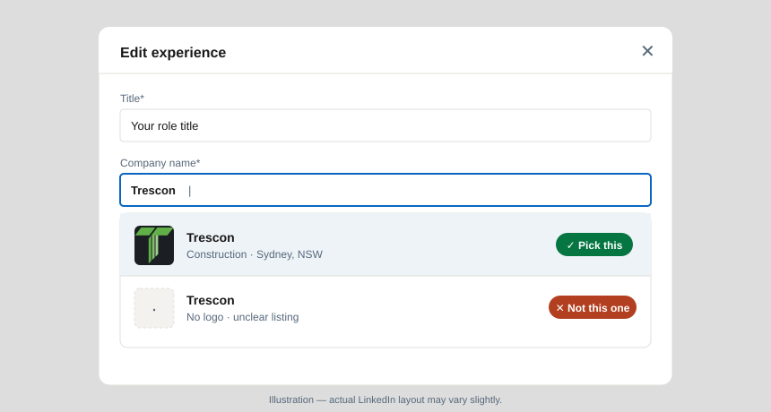
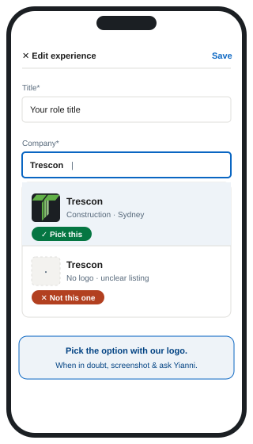

Hi team,
The fix is quick — under two minutes — and you only need to do it on one device. Once you save the change, it syncs across desktop and mobile.
On a computer.
This is the easiest way to make the change. You’ll find the logo picker is clearer on desktop than on mobile.
Update your current Trescon role
- Go to linkedin.com and sign in.
- Click the Me icon in the top navigation, then Profile (View Profile).

- Scroll to the Experience section.
- Find your current Trescon role and click the pencil (edit) icon next to it.

- Click in the Company name field and delete what’s there.
- Start typing Trescon. A dropdown will appear — select the entry that shows our logo. Do not select any Trescon option without our logo.

- Scroll to the bottom of the edit window and click Save.
- Refresh your profile — the Trescon logo should now appear beside your role.
If your profile still shows the other company as a separate role
Sometimes the old (incorrect) employer appears as its own entry. If that happens:
- In your Experience section, click the pencil icon next to the incorrect employer.
- Click Delete experience at the bottom of the edit window and confirm.
Only delete the duplicate or incorrect entry. Do not delete your real employment history.
On iPhone or iPad.
You’ll need the LinkedIn app from the App Store. If it’s already installed, make sure it’s up to date.



- Open the LinkedIn app and sign in.
- Tap your profile photo in the top-left corner, then tap View Profile.
- Scroll down to the Experience section.
- Tap the pencil icon in the top-right of the Experience section, then tap the pencil next to your current Trescon role.
- Tap the Company field and clear the existing text.
- Type Trescon and choose the result with our logo from the list. Avoid any result without a logo.
- Tap Save in the top-right corner.
- Back out to your profile and pull down to refresh — your role should now be linked to Trescon with our logo.
On Android.
The steps on Android are almost identical to iPhone — the screens above are a good visual reference. You’ll need the LinkedIn app from Google Play (up to date).
- Open the LinkedIn app and sign in.
- Tap your profile photo in the top-left corner, then tap View Profile.
- Scroll down to the Experience section.
- Tap the pencil icon on the Experience card, then tap the pencil next to your current Trescon role.
- Tap the Company field and clear the existing text.
- Type Trescon and choose the result with our logo. If nothing shows a logo, stop and message Yianni before saving.
- Tap the tick (✓) or Save in the top-right.
- Pull down on your profile to refresh. The Trescon logo should now sit beside your role.
Quick troubleshooting.
I can see two Trescon options — which one do I pick?
Pick the one with our logo. If both look similar, use desktop to make the change — the logos are easier to distinguish there. When in doubt, send Yianni a screenshot before saving.
The old company still shows up after I save
Two likely causes: (1) LinkedIn has cached the old view — sign out and back in, or wait a few minutes and refresh; (2) there’s a duplicate Experience entry. Edit your Experience list and delete the duplicate with the wrong employer (never delete your real Trescon role).
I don’t have a pencil/edit icon
You’re probably viewing someone else’s profile or an older app version. Make sure you’re on your own profile (tap your photo → View Profile) and update the LinkedIn app. If it still doesn’t appear, use desktop.
It saved, but my co-workers can’t see the change
LinkedIn sometimes takes a few hours to update across the network. Give it up to 24 hours before worrying about it.
Need a hand?
If anything looks off — a wrong logo, a result you’re unsure about, or an error from LinkedIn — pause and send Yianni a screenshot before saving. Thanks for taking the two minutes; it keeps our team properly visible on our reinstated page.